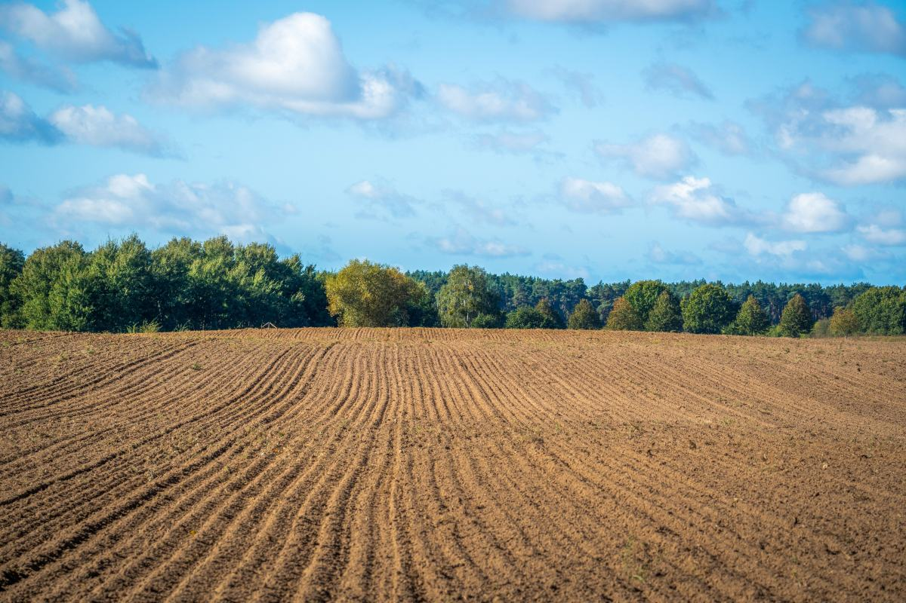
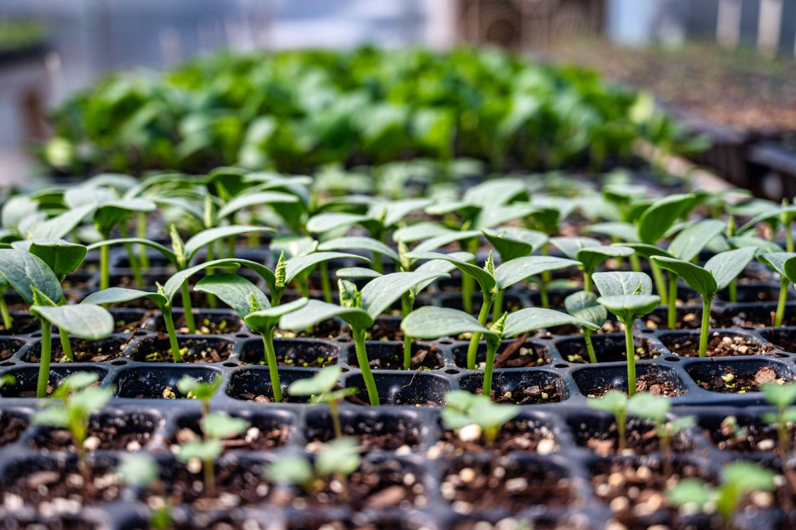
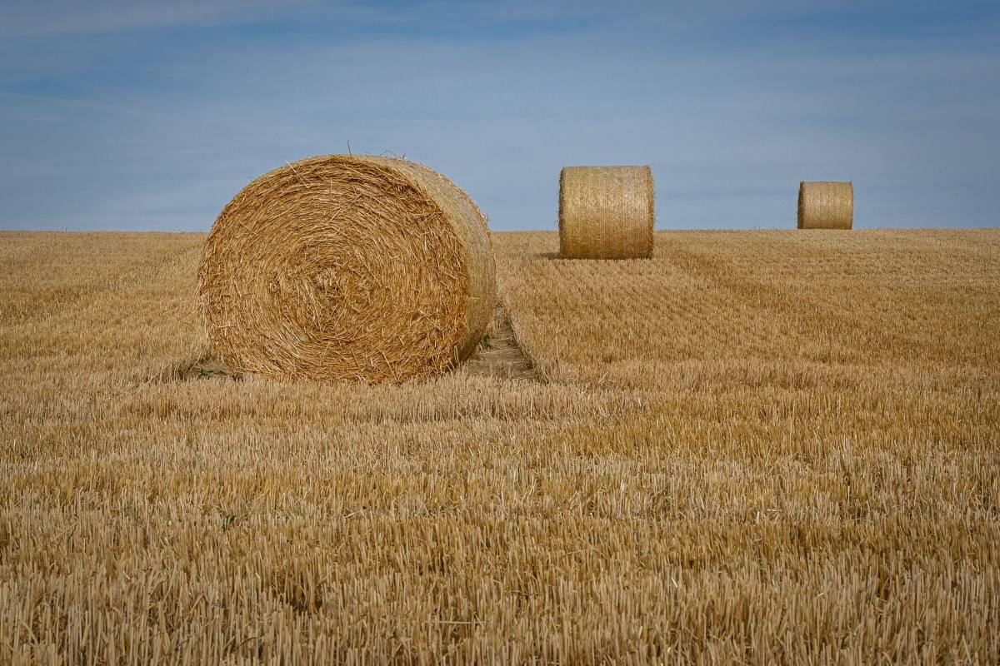
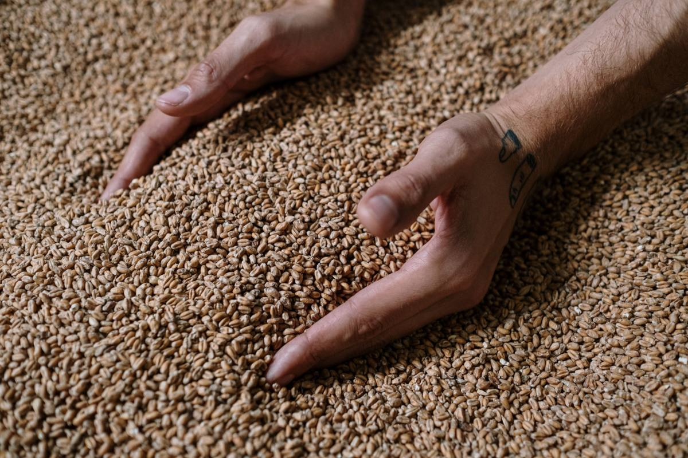
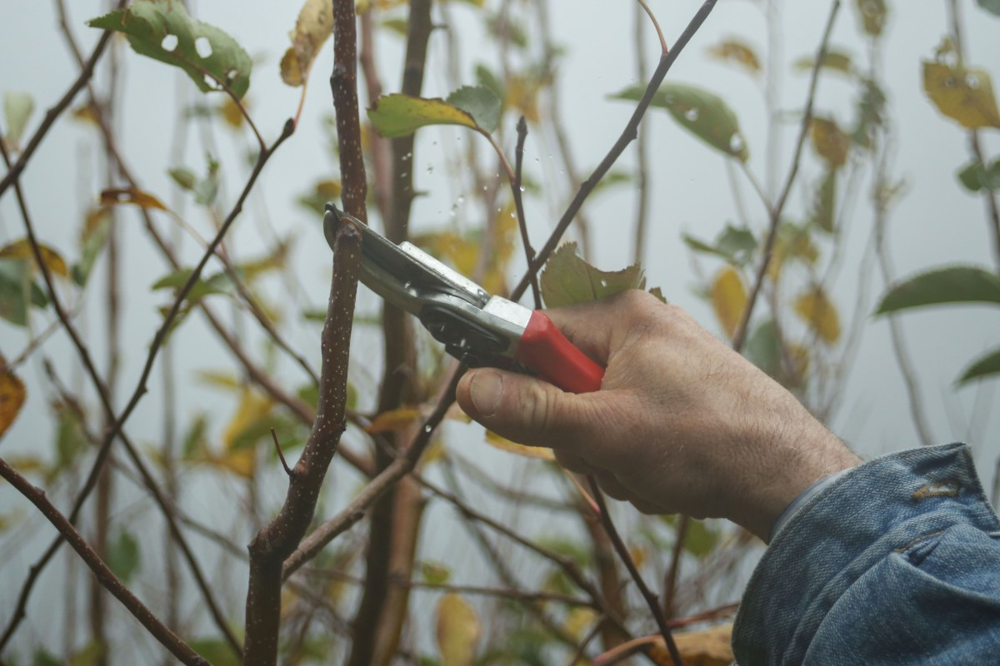

Loncoche · Balmaceda 656
El campo no espera a que uno se acuerde.
Casi todo lo que se compra acá tiene un mes en que sirve y un mes en que ya es tarde. Acá está el año entero escrito, para que nadie llegue en octubre a buscar algo que había que poner en agosto.
Tienda agropecuaria de la Cooperativa Loncofrut · Av. José Manuel Balmaceda 656, Loncoche
Lo que se pregunta en el mostrador
El año, mes por mes
Cuatro temporadas, y en cada una lo que hay que tener listo antes de que llegue. La regla del campo es siempre la misma: lo que se compra a tiempo cuesta la mitad de lo que cuesta apurado.
Sep · Oct · Nov
Primavera
- La siembra y la plantación. Semilla, almácigos, plantines. Lo que no se puso antes de noviembre ya va tarde.
- Primera fertilización, cuando la planta está partiendo.
- Se despierta todo junto: también los bichos. Es cuando se revisa y no cuando ya se comieron la hoja.
Dic · Ene · Feb
Verano
- El riego. Mangueras, cintas, conectores — y es justo cuando se acaban en todas partes.
- Control de malezas y de plagas, que es cuando más aprietan.
- La cosecha, y lo que la cosecha necesita: envases, bandejas, malla, sombra.
Mar · Abr · May
Otoño
- El cierre de la temporada y la fertilización de reposición, que es la que decide la del año que viene.
- Empieza la poda de lo que ya descansó.
- Y lo que nadie compra a tiempo: lo de invernar — techo, alambre, forraje, sal—, que en junio ya está caro.
Jun · Jul · Ago
Invierno
- Es la temporada que la gente cree vacía y es la más importante. Poda, curación de invierno y todo lo que se hace con la planta dormida.
- Cercos, postes y alambre: se arreglan ahora, no en primavera, que es cuando no hay tiempo.
- Y acá se compra la semilla para la primavera, que en septiembre ya está escasa y más cara.
La regla que resume todo
Lo del invierno se compra en invierno.
La mitad de los apuros de una temporada se arreglan comprando con un mes de anticipación, y la otra mitad, con dos. Preguntar en el mostrador qué se viene el mes que entra no cuesta nada — y es exactamente para lo que sirve tener una agropecuaria en el pueblo y no comprar por internet.
Es el calendario general del secano y el valle de la Araucanía, y está puesto para mostrar cómo se ve la sección. Las fechas exactas cambian con el cultivo, con la altura y con el año, y quien las sabe de verdad es la gente de la cooperativa. Antes de publicarlo hay que ajustarlo con ellos.
Lo que nadie explica por escrito
Qué es la cooperativa y qué gana un socio
Es la pregunta que frena a la gente, y no por desconfianza: nadie entra a algo que no entiende. Cinco respuestas cortas resuelven más que cualquier folleto.
- ¿Qué es una cooperativa, en simple?
- Una empresa que es de los que la usan. Cada socio tiene un voto, valga lo que valga su participación — no es como una sociedad donde manda el que puso más.
- ¿Quién puede ser socio?
- Falta: los requisitos reales que pide el estatuto.
- ¿Cuánto cuesta entrar?
- Falta: la cuota de incorporación y las cuotas, si las hay.
- ¿Qué gana un socio que no gane cualquiera?
- Falta: precios, acopio, asesoría, maquinaria — lo que la cooperativa efectivamente ofrece.
- ¿Hay que ser socio para comprar acá?
- No. La tienda atiende a cualquiera. Ser socio es otra cosa, y es voluntario.
Son datos de estatuto: cuánto vale entrar, quién puede y qué recibe un socio. Poner cifras verosímiles acá sería peor que dejarlo en blanco, porque es exactamente lo que la gente viene a verificar. Las llena la cooperativa y nadie más.
5,0
en 7 reseñas
Son pocas, y eso también dice algo: en Loncoche el boca a boca no pasa por Google. Acá la gente pregunta en la feria, no en internet — y por eso una página no reemplaza nada de lo que ya funciona. Sirve para lo otro: para el que llegó hace poco, para el que compra dos veces al año y no sabe qué toca, y para el que busca «agropecuaria Loncoche» a las once de la noche.
Falta imagenes/tienda.jpg — los sacos apilados o
el mesón de atención. 1920 × 1280.
Lo que se compra a tiempo cuesta la mitad de lo que cuesta apurado.
La regla del campo
Dónde estamos
Balmaceda 656, Loncoche
Si viene por algo puntual, llame antes. En agropecuaria pasa siempre lo mismo: se viaja media hora al pueblo por un producto que se acabó el martes. Un llamado de un minuto lo evita.
- Dónde
- Av. José Manuel Balmaceda 656, Loncoche
- Teléfono
- 9 3309 5225
- Horario
- Falta el horario de atención
- Quiénes somos
- Tienda de la Cooperativa Loncofrut
Al llamar, tenga a mano tres datos: qué cultivo o qué animal, cuánta superficie o cuántas cabezas, y qué le pasó o qué quiere lograr. Con eso se recomienda bien — sin eso, se recomienda a ciegas y se vende lo que no era.
Falta imagenes/frente.jpg — el frente del local,
con el letrero de la cooperativa. 900 × 1200.
Av. José Manuel Balmaceda 656, Loncoche Abrir en Google Maps
Lo que pide cada temporada
De la siembra a la poda





Fotos de referencia. Las del local y su surtido las pone la cooperativa.